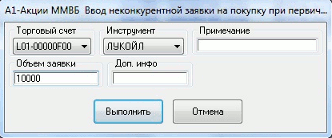

Система QUIK поддерживает возможность участия в первичном размещении инструментов. Режим размещения инструментов предусматривает два этапа:
- Ввод участниками торгов заявок на покупку размещаемого инструмента.
Используемые таблицы:
- « Таблица текущих торгов» – информация о состоянии сессии, допускающем ввод заявок.
- «Таблица заявок» или «Таблица заявок на внебиржевые сделки » – собственные заявки на покупку инструментов.
- Исполнение заявок клиентов андеррайтером.
- «Таблица текущих торгов» – параметры состоявшегося размещения: объем, средневзвешенная, минимальная и максимальная цены сделок и т.п.
- «Таблица сделок» или «Таблица сделок для исполнения» – состояние исполнения собственных заявок.
- При размещении инструментов Таблица котировок (очередей заявок), как правило, не используется.
Размещение может проводиться двумя способами:
- В форме аукциона, путем удовлетворения конкурентных и неконкурентных
заявок.
- Конкурентная заявка – заявка с указанием цены. Ввод
конкурентной заявки на аукционе осуществляется путем формирования
лимитированной заявки на покупку (нажатием кнопки
 на панели инструментов или клавиши «F2»).
на панели инструментов или клавиши «F2»).
- Если в заявке указан тип значения цены «Доходность» или «Средневзвешенная цена», то при приеме заявки сервером QUIK проверка достаточности средств клиента не может быть осуществлена корректно в силу недостаточности информации из торговой системы.
- Неконкурентная заявка – заявка без указания цены, с условием исполнения по средневзвешенной цене удовлетворенных конкурентных заявок. Ввод неконкурентной заявки осуществляется Общим способом выполнения транзакций (нажатием кнопки или клавиш «Ctrl»+«T») и выбором операции «Ввод неконкурентной заявки на покупку при первичном размещении».
- Данный тип транзакции недоступен для пользователей с правами Клиента.
В окне ввода заявки необходимо указать следующие параметры:

- «Торговый счет» – код счета депо, в отношении которого совершается сделка,
- «Инструмент» – наименование инструмента,
- «Примечание» – текстовый комментарий к заявке, необязательное поле,
- «Объем заявки» – объем заявки в денежном выражении.
- Конкурентная заявка – заявка с указанием цены. Ввод
конкурентной заявки на аукционе осуществляется путем формирования
лимитированной заявки на покупку (нажатием кнопки
- Размещение путем удовлетворения адресных заявок в Режиме переговорных
сделок (РПС).
Ввод заявки осуществляется путем формирования адресной заявки на покупку, направленной участнику торгов - андеррайтеру размещения инструментов с условиями, указанными в проспекте эмиссии, и интересующим количеством инструментов, выраженном в лотах.